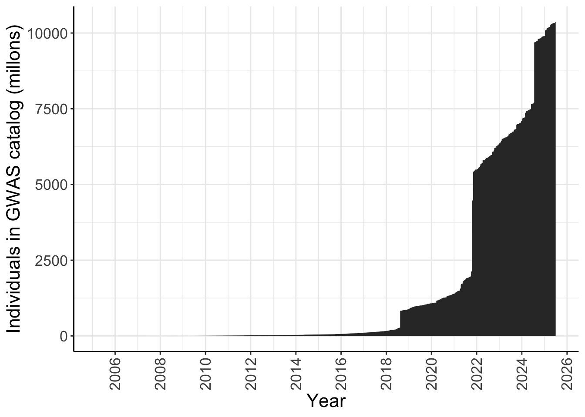
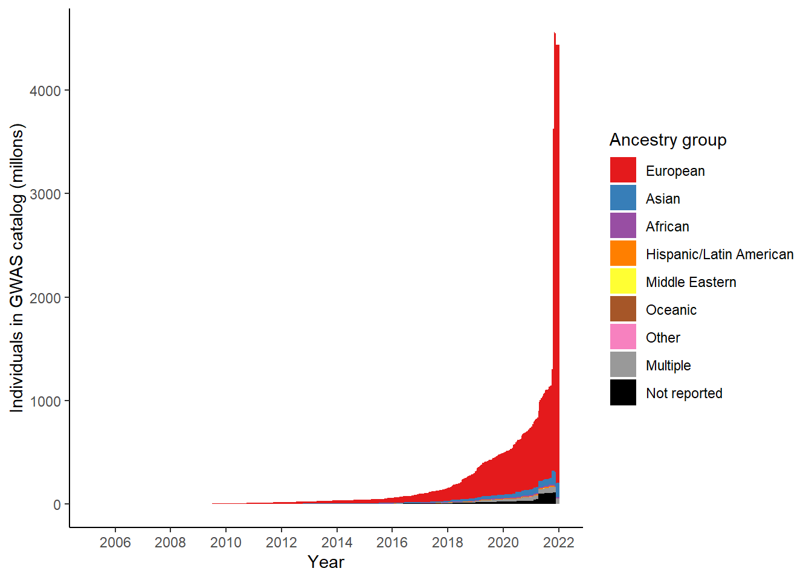

Last updated: 2025-08-25
Checks: 7 0
Knit directory:
genomics_ancest_disease_dispar/
This reproducible R Markdown analysis was created with workflowr (version 1.7.1). The Checks tab describes the reproducibility checks that were applied when the results were created. The Past versions tab lists the development history.
Great! Since the R Markdown file has been committed to the Git repository, you know the exact version of the code that produced these results.
Great job! The global environment was empty. Objects defined in the global environment can affect the analysis in your R Markdown file in unknown ways. For reproduciblity it’s best to always run the code in an empty environment.
The command set.seed(20220216) was run prior to running
the code in the R Markdown file. Setting a seed ensures that any results
that rely on randomness, e.g. subsampling or permutations, are
reproducible.
Great job! Recording the operating system, R version, and package versions is critical for reproducibility.
Nice! There were no cached chunks for this analysis, so you can be confident that you successfully produced the results during this run.
Great job! Using relative paths to the files within your workflowr project makes it easier to run your code on other machines.
Great! You are using Git for version control. Tracking code development and connecting the code version to the results is critical for reproducibility.
The results in this page were generated with repository version 02fe018. See the Past versions tab to see a history of the changes made to the R Markdown and HTML files.
Note that you need to be careful to ensure that all relevant files for
the analysis have been committed to Git prior to generating the results
(you can use wflow_publish or
wflow_git_commit). workflowr only checks the R Markdown
file, but you know if there are other scripts or data files that it
depends on. Below is the status of the Git repository when the results
were generated:
Ignored files:
Ignored: .Rproj.user/
Ignored: analysis/figure/
Ignored: data/gwas_catalog/
Ignored: output/gwas_study_info_cohort_corrected.csv
Ignored: output/gwas_study_info_trait_corrected.csv
Ignored: output/gwas_study_info_trait_ontology_info.csv
Ignored: output/trait_ontology/
Untracked files:
Untracked: .DS_Store
Untracked: data/.DS_Store
Untracked: renv/
Unstaged changes:
Modified: .Rprofile
Modified: analysis/collapse_traits.Rmd
Note that any generated files, e.g. HTML, png, CSS, etc., are not included in this status report because it is ok for generated content to have uncommitted changes.
These are the previous versions of the repository in which changes were
made to the R Markdown
(analysis/replication_ancestry_bias.Rmd) and HTML
(docs/replication_ancestry_bias.html) files. If you’ve
configured a remote Git repository (see ?wflow_git_remote),
click on the hyperlinks in the table below to view the files as they
were in that past version.
| File | Version | Author | Date | Message |
|---|---|---|---|---|
| Rmd | 02fe018 | IJbeasley | 2025-08-25 | Update replicatio Martin et al. 2019 |
| html | ec76159 | IJBeasley | 2025-07-30 | Build site. |
| Rmd | 10a35cc | IJBeasley | 2025-07-30 | Updating replication of ancestry biases in gwas |
library(dplyr)
library(ggplot2)
library(data.table)
source(here::here("code/custom_plotting.R"))gwas_study_info <- fread(here::here("output/gwas_study_info_trait_ontology_info.csv"))
gwas_ancest_info <- fread(here::here("data/gwas_catalog/gwas-catalog-v1.0.3.1-ancestries-r2025-07-21.tsv"),
sep = "\t",
quote = "")
gwas_study_info = gwas_study_info |>
dplyr::rename_all(~gsub(" ", "_", .x))
gwas_ancest_info = gwas_ancest_info |>
dplyr::rename_all(~gsub(" ", "_", .x))
gwas_ancest_info = gwas_ancest_info |>
arrange(DATE)
gwas_study_info = gwas_study_info |>
arrange(DATE)# code adapted from https://github.com/armartin/prs_disparities/blob/master/gwas_disparities_time.R
# https://github.com/armartin/prs_disparities/blob/master/gwas_sfs_pop.R
# gwas cat
# http://bioconductor.org/packages/release/bioc/html/gwascat.html
# following steps from https://static-content.springer.com/esm/art%3A10.1038%2Fs41588-019-0379-x/MediaObjects/41588_2019_379_MOESM1_ESM.pdf
# Some number of individuals are missing
gwas_ancest_info |> dplyr::filter(is.na(NUMBER_OF_INDIVIDUALS) | NUMBER_OF_INDIVIDUALS == 0) |> nrow()[1] 46gwas_ancest_info |> dplyr::filter(is.na(NUMBER_OF_INDIVIDUALS) | NUMBER_OF_INDIVIDUALS == 0) |> head() STUDY_ACCESSION PUBMED_ID FIRST_AUTHOR DATE
<char> <int> <char> <IDat>
1: GCST000308 19115949 Limou S 2009-01-01
2: GCST001070 21573907 Parra EJ 2011-05-15
3: GCST001564 22694930 Li X 2012-06-11
4: GCST001788 23263445 Lawrance-Owen AJ 2012-12-22
5: GCST002197 24057671 Chimusa ER 2013-09-18
6: GCST002330 24406073 Galanter JM 2014-01-07
INITIAL_SAMPLE_DESCRIPTION
<char>
1: 275 European ancestry seropositive non-progressors, 86 European ancestry seropositive rapid progressors, 1,352 European ancestry seronegative controls
2: 1,804 Hispanic cases, 780 Hispanic controls
3: 813 European ancestry cases, 1,011 European ancestry controls
4: 979 European ancestry individuals
5: 642 South African coloured cases, 91 South African coloured controls, (see Thye 2010)
6: 1,893 Latin American cases, 1,881 Latin American controls
REPLICATION_SAMPLE_DESCRIPTION STAGE
<char> <char>
1: (see Fellay 2007) replication
2: European ancestry individuals replication
3: TENOR and GABRIEL studies replication
4: (see Medland, 2010) replication
5: <NA> initial
6: EVE Asthma Consortium, see Torgerson et al., 2011 replication
NUMBER_OF_INDIVIDUALS BROAD_ANCESTRAL_CATEGORY COUNTRY_OF_ORIGIN
<int> <char> <char>
1: NA NR NR
2: NA European NR
3: NA NR NR
4: NA NR NR
5: NA Sub-Saharan African NR
6: NA NR, Hispanic or Latin American NR
COUNTRY_OF_RECRUITMENT ADDITIONAL_ANCESTRY_DESCRIPTION ANCESTRY_DESCRIPTOR
<char> <char> <lgcl>
1: NR NA
2: NR NA
3: NR NA
4: NR NA
5: Malawi, Ghana, Gambia NA
6: NR NA
FOUNDER/GENETICALLY_ISOLATED_POPULATION NUMBER_OF_CASES NUMBER_OF_CONTROLS
<lgcl> <lgcl> <lgcl>
1: NA NA NA
2: NA NA NA
3: NA NA NA
4: NA NA NA
5: NA NA NA
6: NA NA NA
SAMPLE_DESCRIPTION
<lgcl>
1: NA
2: NA
3: NA
4: NA
5: NA
6: NA# Filter missing number of individuals
gwas_ancest_info = gwas_ancest_info |>
dplyr::filter(!is.na(NUMBER_OF_INDIVIDUALS)) |>
dplyr::filter(NUMBER_OF_INDIVIDUALS != 0)
# calculate cumulative number of individuals
gwas_ancest_info = gwas_ancest_info %>%
dplyr::arrange(DATE) |>
mutate(cum_num = cumsum(as.numeric(NUMBER_OF_INDIVIDUALS))
)
# plot cumulative numbers
gwas_ancest_info %>%
# group_by(DATE) %>%
# slice_max(NUMBER_OF_INDIVDUALS) %>%
ggplot(aes(x=DATE,y=cum_num/1e6)) +
# geom_line() +
geom_area() +
scale_x_date(date_labels = '%Y', date_breaks = "2 years") +
custom_theme +
labs(x = "Year",
y = "Individuals in GWAS catalog (millons)")
| Version | Author | Date |
|---|---|---|
| ec76159 | IJBeasley | 2025-07-30 |
# 44 studies / 44 rows
gwas_ancest_info |>
dplyr::filter(is.na(NUMBER_OF_INDIVIDUALS)) |>
nrow()[1] 0# from only 24 gwas papers
gwas_ancest_info |>
dplyr::filter(is.na(NUMBER_OF_INDIVIDUALS)) |>
select(PUBMED_ID) |>
distinct() |>
nrow()[1] 0gwas_ancest_info |>
dplyr::filter(PUBMED_ID == 28679651) |>
select(INITIAL_SAMPLE_DESCRIPTION,
REPLICATION_SAMPLE_DESCRIPTION,
BROAD_ANCESTRAL_CATEGORY) |>
distinct() INITIAL_SAMPLE_DESCRIPTION REPLICATION_SAMPLE_DESCRIPTION
<char> <char>
1: 404 cases, controls <NA>
2: 194 cases, controls <NA>
3: 426 cases, controls <NA>
4: 85 cases, controls <NA>
5: 535 cases, controls <NA>
6: 345 cases, controls <NA>
7: 835 cases, controls <NA>
8: 844 cases, controls <NA>
9: 447 cases, controls <NA>
BROAD_ANCESTRAL_CATEGORY
<char>
1: NR
2: NR
3: NR
4: NR
5: NR
6: NR
7: NR
8: NR
9: NR# 28679651 - problem seems to be that number of controls per disease not specifically listed
# see https://pubmed.ncbi.nlm.nih.gov/28679651/
# although paper they cite as where data comes from (https://www.nature.com/articles/leu2016387#Tab1)
# discloses: 1229 AL amyloidosis patients from Germany, UK and Italy, and 7526 healthy local controlsgwas_ancest_info =
gwas_ancest_info |>
dplyr::filter(!is.na(NUMBER_OF_INDIVIDUALS))Here we make the column ‘ancestry_group’ in the gwas_study_info datasets, ‘ancestry_group’ defines the broad ancestry group (like in Martin et al. 2019, European, Greater Middle Eastern etc.) that each group of individuals belongs to.
grouped_ancest = vector()
broad_ancest_cat = unique(gwas_ancest_info$BROAD_ANCESTRAL_CATEGORY)
for(study_ancest in broad_ancest_cat){
grouped_ancest[study_ancest] = group_ancestry_fn(study_ancest)
}
grouped_ancest_map = data.frame(ancestry_group = grouped_ancest,
BROAD_ANCESTRAL_CATEGORY = broad_ancest_cat
)
print("Mapping examples - broad ancestral categories to ancestry groups")[1] "Mapping examples - broad ancestral categories to ancestry groups"head(grouped_ancest_map) ancestry_group
European European
Asian unspecified Asian
Other Other
African American or Afro-Caribbean African
NR Not reported
South East Asian Asian
BROAD_ANCESTRAL_CATEGORY
European European
Asian unspecified Asian unspecified
Other Other
African American or Afro-Caribbean African American or Afro-Caribbean
NR NR
South East Asian South East Asiangwas_ancest_info = dplyr::left_join(
gwas_ancest_info,
grouped_ancest_map,
by = "BROAD_ANCESTRAL_CATEGORY")
gwas_ancest_info = gwas_ancest_info |>
dplyr::mutate(ancestry_group = factor(ancestry_group, levels = ancestry_levels))gwas_ancest_info %>%
dplyr::group_by(ancestry_group) %>%
dplyr::summarise(n = sum(NUMBER_OF_INDIVIDUALS, na.rm = TRUE)/ 10^6)# A tibble: 9 × 2
ancestry_group n
<fct> <dbl>
1 European 9122.
2 Asian 313.
3 African 408.
4 Hispanic/Latin American 179.
5 Middle Eastern 4.47
6 Oceanic 0.134
7 Other 2.01
8 Multiple 186.
9 Not reported 149. # Define the desired stacking order
gwas_ancest_info =
gwas_ancest_info %>%
mutate(ancestry_group = factor(ancestry_group, levels = ancestry_levels)) %>%
group_by(ancestry_group) %>%
mutate(ancest_cumsum = cumsum(as.numeric(NUMBER_OF_INDIVIDUALS))) %>%
add_final_totals()
gwas_ancest_info |>
ggplot(aes(x=DATE, y=ancest_cumsum/(10^6), fill = ancestry_group)) +
geom_area(position = 'stack') +
scale_x_date(date_labels = '%Y', date_breaks = "2 years") +
theme_classic() +
labs(x = "Year", y = "Individuals in GWAS catalog (millons)") +
scale_fill_manual(values = ancestry_colors, name='Ancestry group') 
| Version | Author | Date |
|---|---|---|
| ec76159 | IJBeasley | 2025-07-30 |
sessionInfo()R version 4.3.1 (2023-06-16)
Platform: aarch64-apple-darwin20 (64-bit)
Running under: macOS 15.6.1
Matrix products: default
BLAS: /Library/Frameworks/R.framework/Versions/4.3-arm64/Resources/lib/libRblas.0.dylib
LAPACK: /Library/Frameworks/R.framework/Versions/4.3-arm64/Resources/lib/libRlapack.dylib; LAPACK version 3.11.0
locale:
[1] en_US.UTF-8/en_US.UTF-8/en_US.UTF-8/C/en_US.UTF-8/en_US.UTF-8
time zone: America/Los_Angeles
tzcode source: internal
attached base packages:
[1] stats graphics grDevices datasets utils methods base
other attached packages:
[1] data.table_1.17.8 ggplot2_3.5.2 dplyr_1.1.4 workflowr_1.7.1
loaded via a namespace (and not attached):
[1] gtable_0.3.6 jsonlite_2.0.0 compiler_4.3.1 renv_1.0.3
[5] promises_1.3.3 tidyselect_1.2.1 Rcpp_1.1.0 stringr_1.5.1
[9] git2r_0.36.2 callr_3.7.6 later_1.4.2 jquerylib_0.1.4
[13] scales_1.4.0 yaml_2.3.10 fastmap_1.2.0 here_1.0.1
[17] R6_2.6.1 labeling_0.4.3 generics_0.1.4 knitr_1.50
[21] tibble_3.3.0 rprojroot_2.1.0 RColorBrewer_1.1-3 bslib_0.9.0
[25] pillar_1.11.0 rlang_1.1.6 utf8_1.2.6 cachem_1.1.0
[29] stringi_1.8.7 httpuv_1.6.16 xfun_0.52 getPass_0.2-4
[33] fs_1.6.6 sass_0.4.10 cli_3.6.5 withr_3.0.2
[37] magrittr_2.0.3 ps_1.9.1 grid_4.3.1 digest_0.6.37
[41] processx_3.8.6 rstudioapi_0.17.1 lifecycle_1.0.4 vctrs_0.6.5
[45] evaluate_1.0.4 glue_1.8.0 farver_2.1.2 whisker_0.4.1
[49] rmarkdown_2.29 httr_1.4.7 tools_4.3.1 pkgconfig_2.0.3
[53] htmltools_0.5.8.1